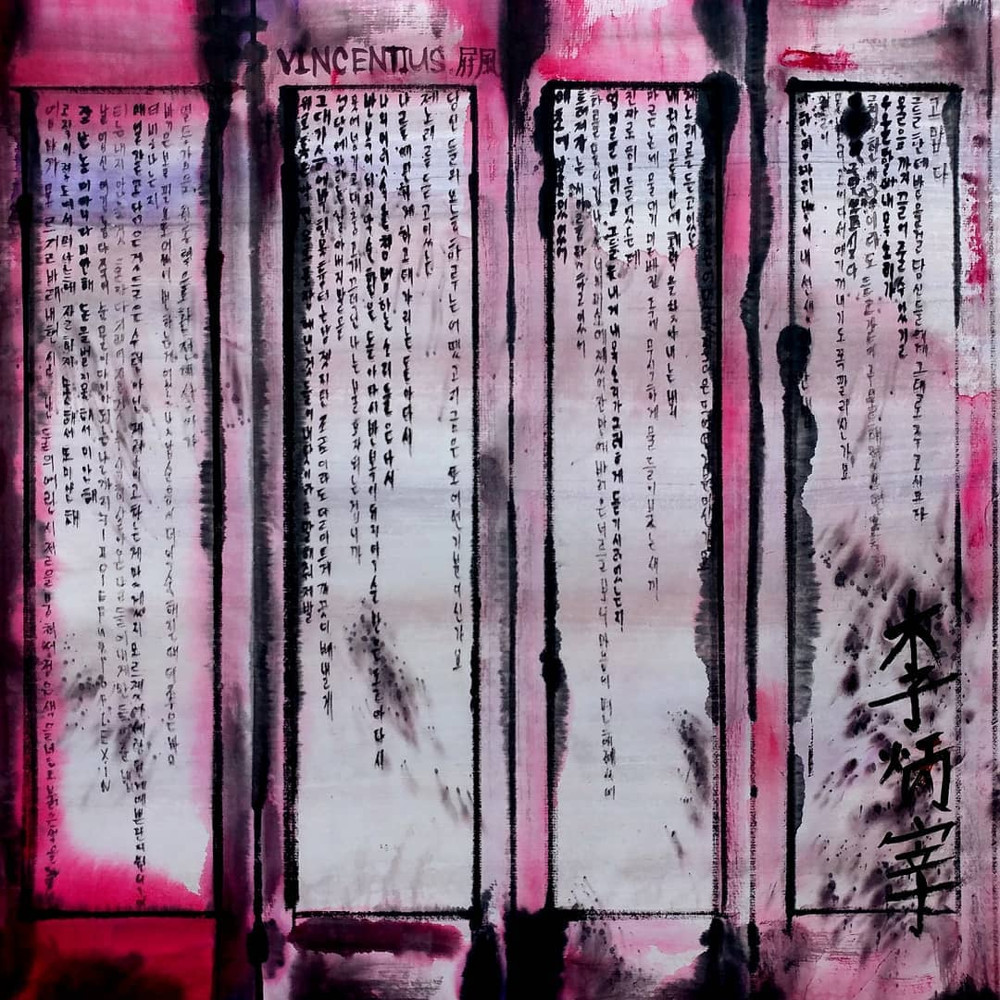

1. 늪 (Remastered)
난 이 늪에 있어 난 이 늪에 있어
모두가 날 내려다보는 이 늪에 있어
넌 내 옆에 있어주기를 바랬던 마음
아직 선명히 남아있어 등돌리던 날
2. 제련
메아리가 칠뿐 메아리가 칠뿐
이 파장은 나를 더 초라하게 포장할 뿐
3. Ouu Ouu Ouu
O uu ouu ouu 엄지를 내리고 그들은 내게
Ouu ouu ouu 내 목소리가 듣기 싫었는지
4. UDC Wave(prod.OS Noma)
사랑 없는 사랑 노래 팔아가
난 열등감을 원동력으로 환전해 살아가
5. 다시(Prod.Os Noma)
반복이 되지 악순환은 돌아 다시
나의 머릿속을 침범하는 소음들은 다시
나를 예민하게 하고 대가리는 돌아 다시
6. 탓
난 기대치를 두 배로 올려
그래야 상실감이 거대해지니까
그래야 사람이 더 초라해지니까
그래야 내가 정말 간절해지니까
7. 조항
난 행복하고 싶지만 또 불행을 노래해
언제부터였을까 불운의 사고를 바란 게
8. 마른논에 물 대기
난 둘의 어릴 적을 뭉쳐서
검은색을 넣고 붉은색을 조금 넣어
9. 패륜아
엄마 아들은 패륜아가 맞아
매일 취해 냄새를 풍기며 늦었으니까
원인이 오로지 나인 눈물을 보았으니까
10. 그대들은 어떤 기분이신가요
그대들은 어떤 기분이신가요
제 노래를 듣고 있는 당신들의
오늘 하루는 어땠고 지금은 또 어떤 기분이신가요
SINKING DOWN WITH U (BONUS TRACK)
넌 또 왜 그래
뭔 일이야 넬 노래
틀고 아무 말도 없이 마시자고 좋네